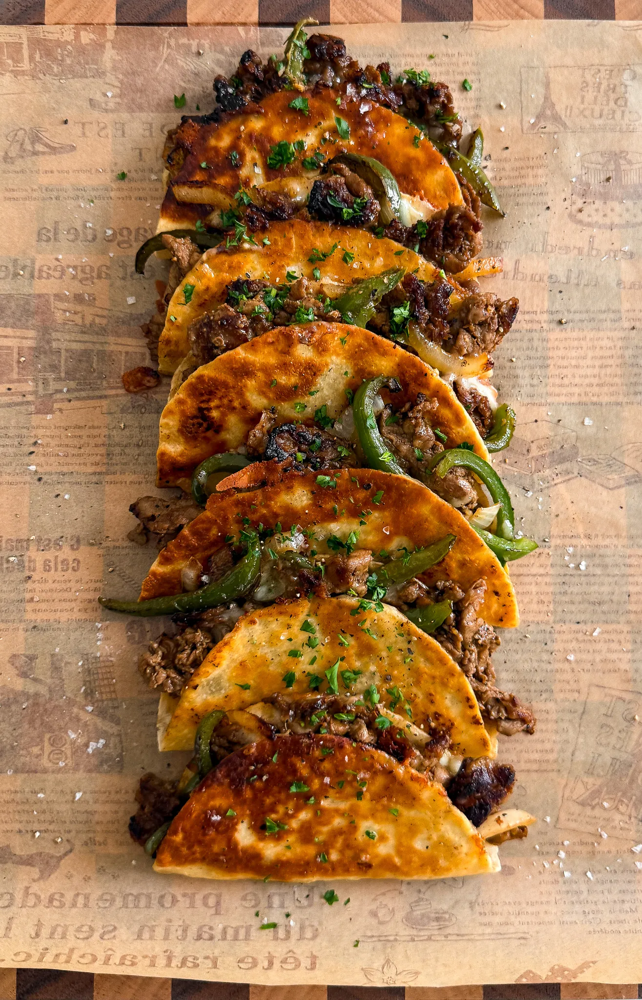

Philly Cheesteak Tacos
Prep Time: 15 mins.
Cook Time: 25 mins.
Total Time: 40 mins.
Yields: 6 tacos
Ingredients
Steak
- 1 pound thinly shaved steak
- 1 tablespoon unsalted butter
- 1 tablespoon neutral oil
- 1/2 to 3/4 teaspoon salt
- 1 teaspoon paprika
- 1/2 teaspoon mustard powder
- 1/4 teaspoon black pepper
- 1 tablespoon Worcestershire sauce
- 1/4 cup beef broth
Veggies
- 1/2 large yellow onion, sliced or chopped
- 1 green bell pepper, thinly sliced
- 1 tablespoon neutral oil
- salt, to taste
- black pepper, to taste
- 1/2 tablespoon minced garlic
Instructions
- Cook the Veggies: In a pan over medium heat, add oil
and sauté the diced onion and sliced bell pepper. Season with
salt and black pepper. Cook for about 6 to 8 minutes, until the
onions are soft and translucent and the peppers are tender.
Stir in the minced garlic and cook for 1 to 2 more minutes,
then remove from the pan and set aside.
- Cook the Steak: In the same pan, heat the butter and oil
medium-high heat. Add the shaved steak and let it sear
minutes to get some browning. Then season with salt, paprika,
and black pepper. Stir in Worcestershire sauce and beef broth,
another 3 to 5 minutes, until the liquid reduces and the steak
tender. Turn off the heat and stir the veggies back in.
- Assemble the Tacos: On each tortilla, sprinkle some
scoop of the steak and veggie mixture, and top with a little
Fold over the tortilla to close.
- Toast the Tacos: Heat a pan or griddle over medium heat
of oil. Toast each taco for about 2 to 3 minutes per side
- Enjoy warm and bonus points with ketchup!

Motcha Milk Jam
Prep Time: 5 mins.
Cook Time: 1 hour.
Total Time: 1 hour.
Yields: 1 1/2 cup.
Ingredients
- 1 1/4 cups whole milk
- 1 1/4 cups heavy cream
- 1/2 cup granulated sugar
- 2 teaspoons cornstarch
- 1/4 cup milk powder
- 1 teaspoon vanilla extract
- 1 tablespoon matcha powder
- 2 tablespoons room temp water
Instructions
-
In a medium saucepan, whisk together the milk, cream,
sugar, cornstarch, milk powder, and vanilla extract until
smooth and fully dissolved.
-
Place the pan over medium-low heat and cook, stirring often,
until it begins to gently bubble.
-
Continue cooking on low to medium-low heat for 45 minutes
to 1 hour, stirring frequently to prevent sticking.
The mixture should reduce and thicken to a creamy, jammy
consistency that coats the back of a spoon.
-
While it's cooking, whisk the matcha powder with the water
in a small bowl using a W and M motion until completely
smooth and lump-free.
-
Once the milk jam has thickened,
remove the pan from heat. Add the matcha mixture and whisk
until fully combined and smooth.
-
Pour the matcha milk jam into a clean jar and let it cool
to room temperature. It will thicken slightly as it cools.
-
Store in the refrigerator for up to one week. It continues
to firm up the longer it sits in the fridge, so give it a
stir before using if needed.
Strawberry Lemonade
Prep Time: 30 mins
Ingredients
Simple Syrop
- 1 1/4 cup granulated white sugar
- 1 1/4 cup hot water
Strawberry Juice
- 10 ounces strawberries
- 1 cup water
Lemon Juice
- 1 cup lemon juice about 8 large lemons
- 4 cups water
Instructions
TO MAKE THE SIMPLE SYRUP
-
To a microwave-safe bowl, add hot water along with
the sugar.
-
Microwave for 30 seconds. Take it out and mix. Microwave
for another 30 seconds. Take it out and mix again.
If it is clear and all the sugar is dissolved, it's
done. If you still see sugar, microwave for another 30
seconds. Once clear, pop in the fridge to cool down to
room temperature.
TO MAKE THE STRAWBERRY JUICE
-
To a food processor, add the strawberries and water.
Blend until there is no more chunks and completely
smooth like a juice.
-
Place a fine sieve over a bowl and strain the juice to
remove the seeds. If it is pouring very slowly, just
swirl it around with a spoon and press gently against
the sieve and it will filter out a lot faster.
TO MAKE THE LEMONADE
-
To a very large pitcher, add the lemon juice and water
along with all the strawberry juice and 1 cup of the
simple syrup. Taste it. If you want it more sweet, add
the rest of the simple syrup. If you want a less strong
taste, dilute it with a little bit of water. I did not
add any extra water and used all the syrup and the
taste was perfect for me.
-
Place in the fridge to chill or serve in a glass with
ice immediately and enjoy!